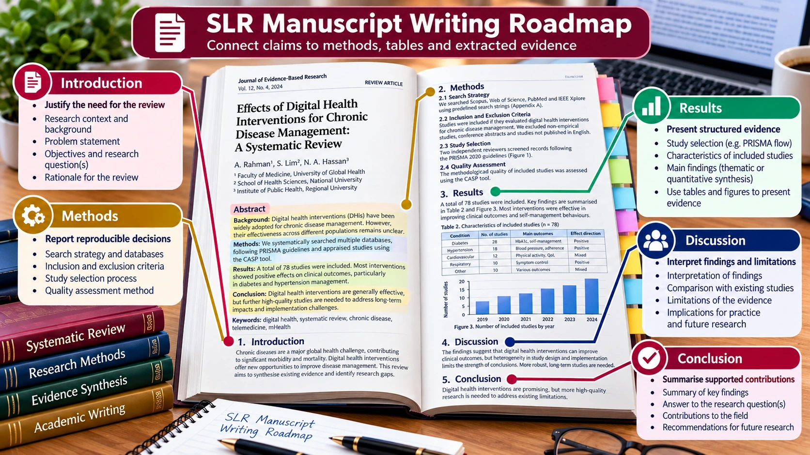

SLR FOUNDATIONS · PRE-HANDS-ON LEARNING
SLR Manuscript Writing Guide
Connect each manuscript section to the evidence produced during the review.

Section-by-section writing roadmap
| Section | Writing focus | Evidence to use |
|---|---|---|
| Introduction | Problem, related reviews, gap, objectives and contribution. | Review comparison matrix. |
| Methods | Protocol, searches, screening, appraisal, extraction and synthesis. | Search logs, protocol, eligibility and PRISMA records. |
| Results | Study selection, characteristics and findings by RQ. | Included studies and extraction matrix. |
| Discussion | Interpret findings, compare evidence and explain implications. | Synthesis and appraisal limitations. |
| Conclusion | Answer the review objectives without unsupported claims. | Findings and limitations. |
Illustrative writing patterns (not text to copy blindly)
Research gap
“Previous reviews have examined [scope], but [specific issue] remains insufficiently synthesised in [context].”
Search methods
“We searched [databases] on [dates] using the documented strategy in [supplementary material].”
Synthesis
“Across the included studies, three recurring themes were identified: [themes]. The strength of evidence varied because [limitations].”
Report what was actually done. Never invent search counts, results, citations or quality scores.